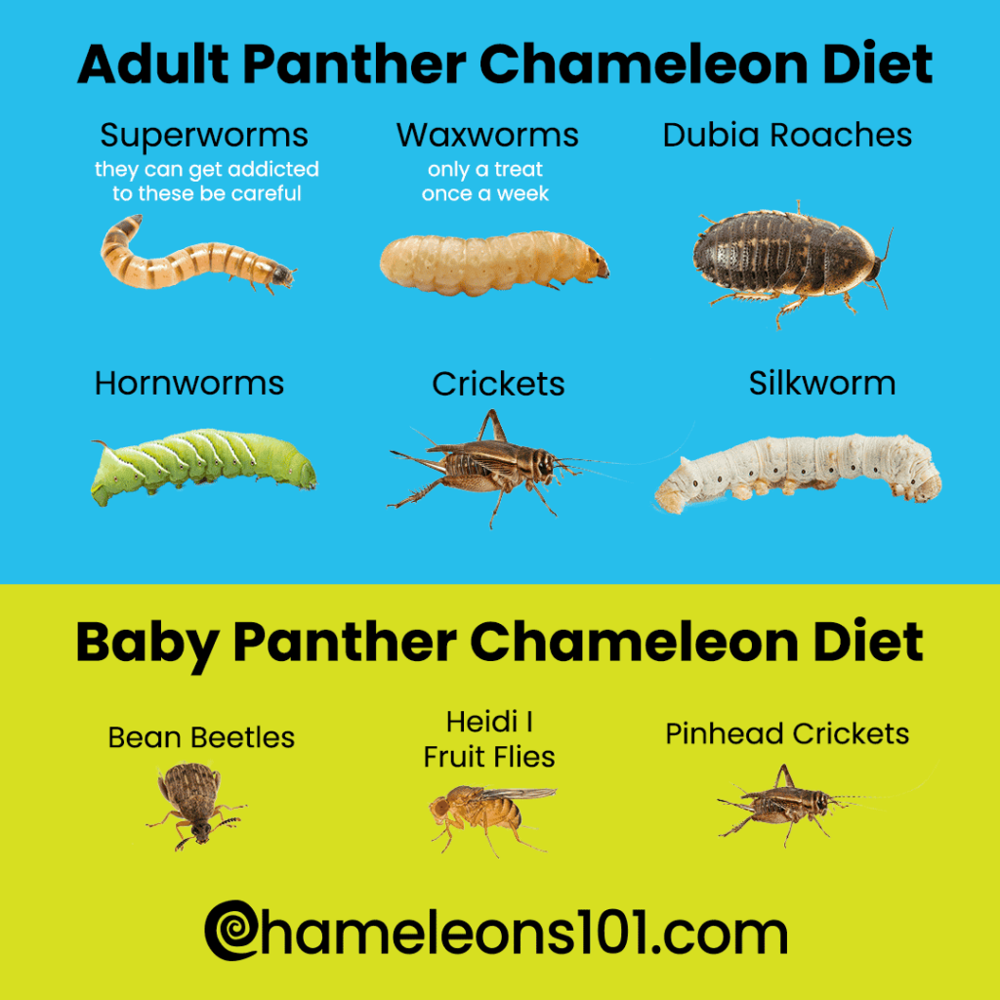

TOTALNA ANALIZA PREHRANE
Kameleon: Precizni Insektivorni Inženjering
Prehrana kameleona je najsofisticiraniji oblik lova u svijetu gmazova. Njihov sustav ovisi o **tri faktora**: vizualnoj triangulaciji, balističkoj kinetici jezika i molekularnoj hidrataciji. Jezik kameleona nije samo mišić, već sustav elastičnih kolagenskih vlakana koja se "pune" poput opruge oko jezične kosti (processus entoglossus). Prilikom ispaljivanja, ubrzanje doseže 50g, a vrh jezika stvara efekt vazmenog usisa (suction cup) koji u kombinaciji s viskoznom slinom (1000 puta gušćom od ljudske) onemogućuje bijeg plijena.
Entomološki spektar i Gut-loading: Kameleon u zatočeništvu pati od monotonije. Osnovu moraju činiti Dubia žohari (Blaptica dubia) zbog optimalnog omjera proteina i hitina, ali je nužna rotacija s crnim cvrčcima (Gryllus bimaculatus), skakavcima (Locusta migratoria) i svilenim bubama (Bombyx mori) koje sadrže enzim serapeptazu za bolju probavu kalcija. Suplementacija: Kalcij bez D3 je obavezan pri svakom obroku, dok se D3 i multivitamini daju strogo 2x mjesečno. Prekomjeran unos vitamina A uzrokuje edeme podbratka (gular edema) i zatajenje jetre. Hidratacija je isključivo "rosna" – piju samo kapljice koje reflektiraju UV svjetlost, stoga je sustav kap-po-kap ili automatsko prskanje 3x dnevno nužno za rad bubrega.

Bradata Agama: Ontogenetska Nutricionistička Tranzicija
Agame su klasični primjer **oportunističkih svejeda**, ali njihove nutritivne potrebe prolaze kroz radikalan preokret. Juvenilne jedinke (do 12 mjeseci) imaju "anabolički" metabolizam koji zahtijeva 80% animalnih proteina za izgradnju skeleta. Adultne jedinke, pak, u prirodi štede energiju, te im 80% prehrane mora biti fitonutritivno (biljno). Prehrana bazirana na insektima kod odraslih agama direktno vodi do pretilosti, masne jetre (Hepatic lipidosis) i zatajenja bubrega zbog prevelikog unosa fosfora.
Botanika i Oksalati: Ključna prepreka su oksalati i goitrogeni. Biljke poput špinata, blitve i kelja sadrže oksalnu kiselinu koja kemijski veže kalcij u neraskidive soli (kalcijev oksalat), čineći ga neupotrebljivim za kosti. Osnova moraju biti: Eskarola, Radič, List maslačka, Rikula i Hibiskus. Voće (borovnice, maline) smije biti samo 5% unosa zbog fruktoze koja uzrokuje karijes i proljev. Insekti (Dubie, cvrčci) moraju se nuditi u jutarnjim satima kako bi životinja imala 8+ sati "basking" vremena pod UVB lampom za sintezu vitamina D3 i aktivaciju probavnih enzima.
Leopard Gekon: Lipidni Metabolizam i Kaudalna Skladišta
Leopard gekoni su **obligatni insektivori**, što znači da nemaju ceko-biološki kapacitet za probavu biljnih vlakana. Njihov primarni energetski sustav je fokusiran na rep (cauda), koji služi kao rezervoar masti (lipida) i vode za sušna razdoblja. Zdrav gekon mora imati rep debljine barem 2/3 debljine vrata. Ako gekon odbaci rep (autotomija), gubi preko 50% svojih metaboličkih zaliha, što zahtijeva hitan "re-feeding" protokol bogat masnim kiselinama.
Senzorni input i Jacobsonov organ: Gekoni detektiraju plijen putem L-aminokiselina u zraku koristeći Jacobsonov organ na nepcu. Insekti moraju biti živi i brzi kako bi stimulirali ovaj organ. Meni: Glavni izvor su Dubia žohari i cvrčci. Brašnari (Mealworms) i Zofobasi su dopušteni samo kao poslastica jer imaju previsok udio hitina koji gekon teško izbacuje ako temperatura u terariju padne ispod 30°C. Oprez: Pijesak u terariju u kombinaciji s hranom uzrokuje smrtonosnu impakciju – gekon prilikom lova proguta pijesak koji se "zacementira" u crijevima.
Krestasti Gekon: Frugivorna Fermentacija i CGD Standardi
Ovi gekoni su evoluirali kao **arborealni frugivori**. U divljini Nove Kaledonije primarno se hrane prezrelim plodovima koji su u fazi rane fermentacije, te polenom i nektarom. Njihova pljuvačka sadrži specifične enzime za razgradnju fruktoze. Najveća revolucija u njihovom držanju je uvođenje CGD (Complete Gecko Diet) mješavina. Ove kašice (brendovi Pangea i Repashy) su laboratorijski balansirane da sadrže točan omjer kalcija, proteina sirutke, jaja i voćnih prahova.
Opasnosti improvizacije: Početnici često griješe hraneći ih kašicama za bebe ili zgnječenim bananama. Banane imaju katastrofalan omjer kalcija i fosfora (1:11), što kod krestastih gekona uzrokuje "Rubber Jaw" sindrom – donja čeljust postaje mekana poput gume i gušter više ne može jesti. Protokol: Svježa kašica se nudi svaka 2 dana navečer, a jednom tjedno se daju cvrčci prašeni kalcijem kako bi se održala gustoća kostiju i mišićni tonus čeljusti.
Argentinski Tegu: Inteligencija i Mesojedna Svestranost
Tegui su jedni od najinteligentnijih guštera, a njihova prehrana direktno utječe na kognitivne funkcije. Oni su **makro-svejedi**. Za razliku od monitora, tegui u odrasloj dobi trebaju oko 30% biljne hrane (voća i povrća). Ključ njihovog rasta je Whole Prey (cijeli plijen). Fileti mesa bez kostiju su beskorisni jer tegu treba kalcij iz kostiju, vitamine iz jetre i probiotike iz probavnog trakta plijena (miševa, štakora ili prepelica).
Specifičnosti: Smiju konzumirati ribu (losos, tilapia) zbog omega-3 kiselina, ali oprez s ribom koja sadrži tiaminazu (enzim koji uništava vitamin B1). Jaja su superhrana, ali sirovi bjelanjak sadrži avidin koji blokira apsorpciju biotina. Rješenje: jaja davati kuhana ili vrlo rijetko sirova s ljuskom. Brumacija: Prije zimske hibernacije (brumacije), tegu mora proći kroz post od 2 tjedna kako bi crijeva bila potpuno prazna, inače hrana u njemu trune tijekom sna, što dovodi do sepse.
Uromastiks: Pustinjska Celuloza i Hindgut Bakterije
Uromastiksi su **ekstremni biljojedi (herbivori)** pustinjskih područja. Njihov probavni trakt je opremljen proširenim slijepim crijevom (cecum) koje funkcionira kao bioreaktor za fermentaciju vlakana pomoću specifičnih simbiotskih bakterija. Za ovaj proces im je potrebna toplina od 45-55°C; bez toga, bakterije umiru i probava staje.
Granivorija: Oni su jedini gušteri u hobiju koji primarno jedu suhe sjemenke (leća, proso, grašak, split-peas). Ove sjemenke osiguravaju potrebne ugljikohidrate i minerale bez opasnosti od debljanja. Zabranjena zona: Davanje insekata uzrokuje nakupljanje mokraćne kiseline u zglobovima (Giht). Životinja počinje šepati, zglobovi otiču, a bubrezi nepovratno otkazuju. Vodu crpe isključivo iz svježeg maslačka i radiča – posuda s vodom u terariju je opasna jer podiže vlagu koja uzrokuje respiratorne infekcije.
Zelena Iguana: Arborealni Folivori i Enzimski Disbalans
Iguane su striktni **folivori (jedu lišće)**. Njihovi zubi su dizajnirani kao pile koje režu biljno tkivo, ali nemaju kapacitet za žvakanje, pa hrana mora biti sjeckana na veličinu glave. Probava se odvija putem **hindgut fermentacije**, slično kao kod konja. Svaki unos životinjskih proteina (čak i jedan kukac mjesečno) stvara ogroman pritisak na bubrege i dovodi do prerane smrti od zatajenja (Visceralna giht).
Zlatna mješavina: Prehrana mora sadržavati idealan omjer kalcija i fosfora (2:1). Osnova (80%) su tamni listovi: Endivija, Escarola, Listovi senfa, Maslačak i Hibiskus. Povrće (15%) poput tikvica i mrkve daje vlagu, a voće (5%) služi samo kao vizualni poticaj. Alfalfa (Lucerna): Sušena lucerna u prahu je tajno oružje iskusnih vlasnika jer je bogata biljnim proteinima i kalcijem, te se posipa po svakom obroku.